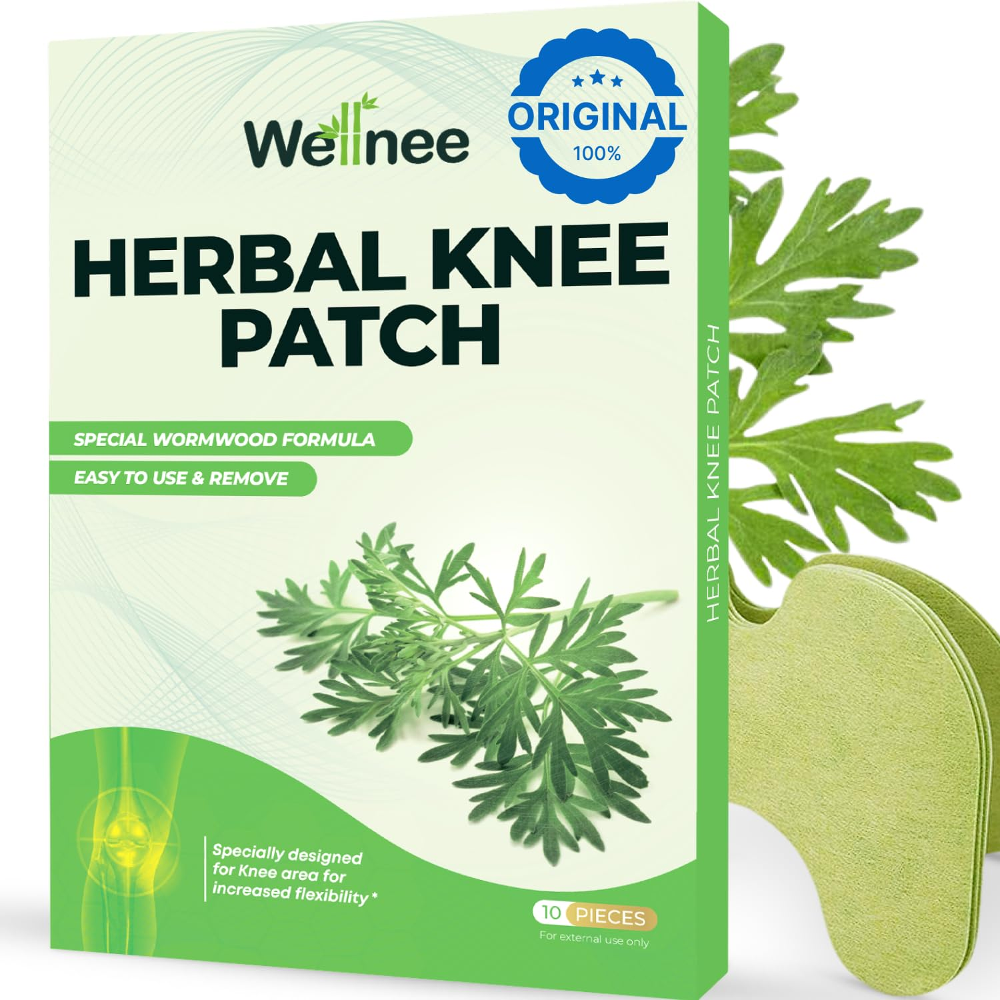

The Doctor Said I'd Never Run Again
My daughter found me crying on the bathroom floor at 3 AM.
Skip the story? Get 70% off WellKnee patches now:
GET 70% OFF NOW →.png)
The Hidden Crisis Destroying Active Adults' Knees
If you're over 40 and your knee pain keeps getting worse despite trying everything, you need to read this.
Studies show 67% of adults over 45 have chronic knee pain. But what nobody tells you is that the treatments you're using might actually be accelerating the damage.
I discovered this the hard way. After two years of failed treatments, an ER visit, and being told I'd need surgery by 50, I stumbled upon something that changed everything.
The real problem wasn't what I thought. And the solution came from where I least expected it.
(Sarah M., verified customer: "3 weeks and I'm walking without limping for the first time in months.")
Ready to end your knee pain nightmare?
TRY WELLKNEE RISK-FREE →My Nightmare Started Like Yours Probably Did
I was just like you. Active. Independent. The mom who played tag with her kids and ran 5Ks on weekends.
Then my knees started hurting.
First, I did what everyone does. Ice. Ibuprofen. New running shoes. Expensive knee braces from the pharmacy.
Nothing worked.
Then came the prescription medications. Celebrex made me retain water. Tramadol left me so foggy I made mistakes at work. My stomach hurt constantly from the NSAIDs.
But it just kept getting worse.
The breaking point came at my nephew's birthday party. They were playing soccer in the backyard. My 8-year-old grabbed my hand: "Come play, Aunt Lisa!"
I couldn't. My knees literally wouldn't let me.
That night in the ER, after my knee gave out completely, the doctor looked at my X-rays and said words that destroyed me:
"You have significant deterioration. Without surgery, you'll have permanent damage."
I was 46 years old.
Don't let this be your story too.
GET HELP NOW →The Shocking Truth My Physical Therapist Revealed
For months, I googled everything. Forums at 2 AM. Failed treatments. Wasted hundreds on supplements and creams.
Then my physical therapist, Maria, said something that stopped me cold:
"You know what's crazy? 99% of people treat where it hurts, but only 1% understand WHY it keeps hurting."
She explained that knee pain isn't usually structural damage at first. It's the tissue around the joint stuck in an inflammatory loop.
Think of it like a smoke alarm that won't stop beeping even after the fire's out.
Your knee tissue gets irritated. It swells. The swelling causes more irritation. Which causes more swelling.
Pills mask the pain but don't break the cycle.
Creams sit on the surface.
Ice helps for 20 minutes.
Meanwhile, that inflammatory loop keeps running 24/7, slowly destroying your cartilage.
"That's why your pain always comes back," Maria said. "You're treating the symptom, not the cause."
Studies from Johns Hopkins confirmed this. Chronic localized inflammation is the #1 driver of joint deterioration.
I felt validated but terrified. If nothing was breaking the cycle, was surgery inevitable?
The Accidental Discovery That Changed Everything
Maria mentioned that one of her patients, a 58-year-old marathon runner, avoided surgery using something unexpected.
Herbal patches from South Korea.
I almost laughed. Patches? For serious knee pain?
But she explained why they worked differently:
"Pills go through your whole system. Maybe 5% reaches your knee.
Creams absorb and fade in 30 minutes.
But these patches deliver anti-inflammatory compounds directly through the skin for 6-8 hours straight."
It's like the difference between spraying your whole yard versus targeting just the weeds.
The patches use wormwood, angelica, and ginger – herbs proven for centuries to reduce inflammation. But the key is the sustained delivery method.
They calm the inflammatory loop long enough for it to actually reset.
Not mask it. Not numb it. Break the cycle.
.png)
I Had Nothing Left to Lose
I ordered WellKnee patches that night. $39 seemed like nothing compared to the $3,000 in failed treatments.
The first morning shocked me.
Not because the pain vanished – it didn't. But when I got out of bed, my knee didn't scream.
It was... quieter.
By day 4, I walked my dog without planning my route around hills.
By day 10, I climbed stairs without gripping the rail.
By week 3, I did something I hadn't done in two years.
I went for a run.
Just a slow jog around the block. Maybe 5 minutes. But I RAN.
I sat on the curb and cried. Happy tears this time.
This could be you in 3 weeks.
START YOUR RECOVERY →(Results from verified customers:)
Why WellKnee Works When Everything Else Failed
Here's what makes these different:
* Targeted Delivery: Goes directly through skin to inflamed tissue (not through your digestive system)
* 8-Hour Time Release: Continuous anti-inflammatory action while you sleep or move
* Natural Formula: No chemicals, no side effects, no liver damage
* Protective Barrier: Creates micro-protection during movement to prevent re-triggering
Compare that to:
* Pills that destroy your stomach ($200/month)
* Creams that barely penetrate ($50 for 2 weeks)
* Cortisone shots that wear off ($500 each)
* Surgery risks and recovery ($15,000+)
The science is simple: calm the inflammation long enough, and the cycle breaks.
Your knee stops "getting angry." The tissue relaxes. The pain fades.
You get your life back.
WellKnee offers what no one else will: 90-day money-back guarantee.
They know the science. They know it works.
Right now: 70% discount for first-time customers.
Regular price: $59.83
Your price: $17.95
You save: $41.88
One patch costs less than a single copay. Less than one bottle of Celebrex. Less than parking at the hospital.
The inflammatory loop is running right now. Tonight while you sleep. Tomorrow when you walk.
Every day you wait is more accumulated damage.
Check Availability — 70% Off →You Have Two Choices
You can keep doing what you're doing.
Keep treating symptoms while the real problem gets worse. Keep taking pills that fog your mind and hurt your stomach. Keep losing pieces of your life.
Until surgery becomes your only option.
OR
You can try what thousands of people like you have discovered.
A natural, targeted solution that addresses the real cause. That lets you be yourself again.
Right now, WellKnee is offering a risk-free trial. 60-day money-back guarantee. If you don't see improvement, you pay nothing.
But fair warning: we're currently backordered 3 weeks due to viral social media exposure.
The current batch ships immediately, but once it's gone, you'll wait.
(Linda R.: "Waited 5 weeks for restock. Worth every day of waiting.")
Your knees are getting worse every day you wait.
The inflammatory cycle is running right now. Tonight. Tomorrow. Damaging more tissue.
You've probably wasted hundreds on solutions that didn't work.
Isn't it worth trying the one thing that targets the actual cause?
Check Availability Now
Look, I can't promise you'll run marathons. Or that you'll be 25 again.
But I can tell you this:
Six months ago, I was googling "knee replacement complications" at 3 AM.
Today, I played soccer with my nephew.
The difference? I finally stopped treating the symptom and addressed the cause.
You don't have to accept that this is your life now. That pain is permanent. That surgery is inevitable.
There's another way.
But only if you act before the damage becomes irreversible.
Check if WellKnee is still available. Try it risk-free for 60 days.
Stop the cycle. Get your life back.
Check Availability →P.S. - My physical therapist now recommends these to all her knee patients. She says she's seen more improvement in 6 months than in her previous 5 years of practice. That should tell you everything.
Follow WellKnee
End Knee Pain Effortlessly All Day
Get WellKnee Patches for comfortable, productive, and painless days every time.